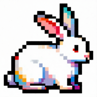

rabbithole
ALPHA6
◀
▶
0:00
August - Vowel Sounds
Silver 44 - 4masks
Barlow's Jig - Vowel Sounds
Paint Exchange - 4masks
Auto-switch artist profiles
▶
Edit Timeline
Loading player...
Song Parts
Timeline Editor
x
Save to PickiPedia